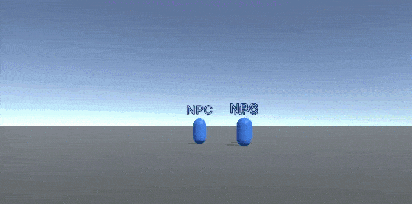
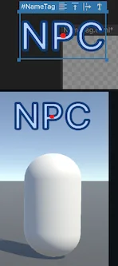
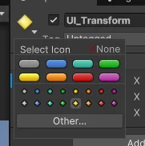

This example demonstrates how to dynamically set the position of a visual element at runtime. The recommended best practice to move elements at runtime is to use style.translate and set the DynamicTransform usage hint on the moving element. This approach is optimal for performance as it avoids dirtying the layout and keeps updates confined to the transform stage. For more information, refer to Optimize performance of moving elements at runtime.
This example creates a prefab in the scene. The prefab represents a non-player character (NPC) that moves randomly within a specified range. The NPC has a name tag that follows it and scales based on the distance from the camera.

You can find the completed files that this example creates in this GitHub repository.
This guide is for developers familiar with the Unity Editor, UI Toolkit, and C# scripting. Before you start, get familiar with the following:
Create a UXML in your project and define a VisualElement within it. The VisualElment acts as the parent container for any child elements that you plan to move dynamically during runtime.
UI to store the UXML and USS files.UI folder, create a UXML file named NameTagContainer.uxml.NameTagContainer.uxml file to open it in the UI Builder.BaseContainer.The finished NameTagContainer.uxml file looks like this:
<engine:UXML xmlns:engine="UnityEngine.UIElements" >
<engine:VisualElement name="BaseContainer" style="flex-grow: 1;" />
</engine:UXML>
Create a USS file to style the name tag and a UXML file to define the name tag template. The name tag template is a Label element that displays the name of the NPC. The name tag follows the NPC in the Scene.
In the UI folder, create a USS file named NameTag.uss with the following content:
#NameTag {
/* This sets the position of the Label element to be absolute, rather than relative to the parent container. */
position: absolute;
/* This ensures that the pivot point of the Label element is centered, rather than in the top left corner.*/
translate: -50% -50%;
-unity-font-style: bold;
color: rgb(181, 210, 248);
-unity-text-outline-width: 1px;
-unity-text-outline-color: rgb(11, 60, 123);
}
In the UI folder, create a UXML file named NameTag.uxml.
Double-click the NameTag.uxml file to open it in the UI Builder.
Add a Label to the Hierarchy panel and name it NameTag.
In the Inspector panel, do the following:
NPC. This value represents the name of the NPC.Ignore. This prevents the Label element from responding to mouse events, which is more optimal for performance.In the StyleSheets panel, select + > Add Existing USS.
Follow the instruction to add the NameTag.uss file.
Check the Label element in the Viewport. The translate: -50% -50% style centers the pivot point of the Label element, causing it to appear in the top-left corner of the Viewport. This is expected behavior. The name tag will be positioned relative to the NPC GameObject in the scene.

Save your changes.
The finished NameTag.uxml file might look like this:
<engine:UXML xmlns:engine="UnityEngine.UIElements">
<Style src="NameTag.uss" />
<engine:Label text="NPC" name="NameTag" picking-mode="Ignore" />
</engine:UXML>
Create a RandomMovement class that handles random movement of the NPC prefab. The NPC moves within a specified range and changes direction when it reaches the boundary.
Set the DynamicTransform usage hint on the moving element to optimize performance.
Note: The recommended best practice is to apply the usage hint to the transformed element which in this case is the name tag template container rather than the child label.
Scripts to store the C# scripts.Scripts folder, create a C# script named RandomMovement.cs with the following content:using UnityEngine;
using Random = UnityEngine.Random;
public class RandomMovement : MonoBehaviour
{
public float moveSpeed;
public float movementRange;
public Vector3 targetPosition;
private float m_PositionY;
// Initialize the starting position and target position of the GameObject.
void Start()
{
m_PositionY = transform.position.y;
targetPosition = new Vector3(0, m_PositionY, 0);
}
// Updates the position of the GameObject at fixed intervals.
// Move the GameObject towards the target position, and sets a new random target position when the current target is reached.
void FixedUpdate()
{
if (transform.position != targetPosition)
{
transform.position = Vector3.MoveTowards(transform.position, targetPosition, moveSpeed * Time.deltaTime);
}
else
{
targetPosition = new Vector3(Random.Range(-movementRange, movementRange), m_PositionY, Random.Range(-movementRange, movementRange));
}
}
}
Create a MovingNameTag class that manages the position and scale of the name tag. The name tag follows the NPC GameObject in the scene. The name tag scales based on the distance from the Camera and is culled when it is too far away or behind the camera.
Scripts folder, create a C# script named MovingNameTag.cs with the following content:using System;
using UnityEngine;
using UnityEngine.UIElements;
public class MovingNameTag : MonoBehaviour
{
[SerializeField]
VisualTreeAsset m_NameTagTemplate;
[SerializeField]
PanelRenderer m_BaseContainerDocument;
[SerializeField]
Transform m_UITransform;
[SerializeField]
float m_ScaleMultiplier;
[SerializeField]
float m_DistanceCullingRange;
VisualElement m_Root;
VisualElement m_BaseContainer;
VisualElement m_NpcNameTag;
Camera m_MainCamera;
void Awake()
{
m_MainCamera = Camera.main;
m_BaseContainerDocument.RegisterUIReloadCallback((panelRenderer, root) =>
{
m_BaseContainer = root.Q<VisualElement>("BaseContainer");
m_NpcNameTag = m_NameTagTemplate.Instantiate();
// Set DynamicTransform hint on the moving element to optimize performance.
m_NpcNameTag.usageHints = UsageHints.DynamicTransform;
m_BaseContainer.Add(m_NpcNameTag);
m_NpcNameTag.style.position = new StyleEnum<Position>(Position.Absolute);
});
}
void Update()
{
SetNameTagPositionAndScale();
}
void SetNameTagPositionAndScale()
{
var cameraSpaceLocation = GetCameraSpaceLocation(m_UITransform);
// Use style.translate to set the position of the name tag.
m_NpcNameTag.style.translate = new Translate(cameraSpaceLocation.x, cameraSpaceLocation.y);
// Get distance of NPC from camera.
var distance = Vector3.Distance(m_UITransform.position, m_MainCamera.transform.position);
// Calculate 1/distance so the name tag get smaller as the distance gets bigger.
var scale = 1 / distance * m_ScaleMultiplier;
m_NpcNameTag.style.scale = new Scale(new Vector2(scale, scale));
// Display name tag based on whether it's in front of the camera and within culling range.
if (cameraSpaceLocation.z < 0 || distance > m_DistanceCullingRange)
{
m_NpcNameTag.style.display = DisplayStyle.None;
}
else
{
m_NpcNameTag.style.display = DisplayStyle.Flex;
}
}
Vector3 GetCameraSpaceLocation(Transform objectTransform)
{
// Get the size of the parent visual element of the name tag.
var containerSize = m_BaseContainer.layout.size;
var screenPoint = m_MainCamera.WorldToViewportPoint(objectTransform.position);
var output = new Vector3(screenPoint.x * containerSize.x, (1 - screenPoint.y) * containerSize.y, screenPoint.z);
return output;
}
}
Create a SortElements class that sorts the name tags based on their scale, which is based on the distance of the objects they follow.
Scripts folder, create a C# script named SortElements.cs with the following content:using System.Collections.Generic;
using UnityEngine;
using UnityEngine.UIElements;
public class SortElements : MonoBehaviour
{
[SerializeField]
PanelRenderer m_MovingElements;
VisualElement m_BaseContainer;
MovingNameTag[] m_MovingNameTags;
void Start()
{
m_MovingNameTags = FindObjectsByType<MovingNameTag>();
m_MovingElements.RegisterUIReloadCallback((panelRenderer, root) =>
{
m_BaseContainer = root.Q<VisualElement>("BaseContainer");
});
}
void Update()
{
m_BaseContainer.Sort(CompareOrder);
}
static int CompareOrder(VisualElement x, VisualElement y)
{
// Compare the scale of the visual elements in the base container, which is
// determined by the distance of the object it follows in the MovingNameTag component
return x.style.scale.value.value.x.CompareTo(y.style.scale.value.value.x);
}
}
Set up the scene with a floor and a Panel Renderer GameObject. A floor is a Plane GameObject that represents the floor of the scene.
The Panel Renderer GameObject is the UI that contains the visual elements that move at runtime. The UI contains the SortElements component, which sorts the name tags based on their scale.
In the SampleScene, add a Plane GameObject named Floor.
Add a material to the floor.
In the Hierarchy window, select UI Toolkit > Panel Renderer and name it as UI.
In the Inspector window of the Panel Renderer GameObject, do the following:
NameTagContainer.SortElements component.In the Sort Elements component field, set Moving Elements to UI. This makes the SortElements component reference the Panel Renderer Component, which in turn references the NameTagContainer source asset.
Create an NPC prefab that moves randomly within a specified range.
In the SampleScene, create an empty GameObject named NPC.
In the Inspector window of the NPC GameObject, add the RandomMovement component. This component manages the random movement of the NPC.
In the Random Movement component field, do the following:
Set the Speed to 2. This value determines the speed at which the NPC moves.
Set the Range to 10. This value determines the range within which the NPC moves.
Note: The Random Movement component contains a Target Position field that represents the NPC’s next target position, which is randomly set in the script. This field is primarily for debugging purposes and you don’t need to manually set it.
The NPC prefab contains three child GameObjects:
UI_NameTag that represents the name tag that follows the NPC.UI_Transform that represents the position of the name tag. This GameObject acts as a reference point or anchor for the name tag, defining where the name tag is positioned in relation to the NPC.The MovingNameTag component moves the name tag based on the position of the UI_Transform GameObject. This setup allows for better organization and flexibility. If you need to adjust the position of the name tag, you can simply modify the UI_Transform GameObject’s position without affecting the NPC GameObject or other components.
Right-click the NPC GameObject and select 3D Object > Capsule to add a child Capsule GameObject.
Set Capsule’s Y position to 1 so that it doesn’t clip into the floor plane.
Add a material to the Capsule GameObject, such as a blue surface material if you have one.
Right-click the NPC GameObject and select Create Empty to add another empty child GameObject and name it UI_Transform.
In the Inspector window of the UI_Transform GameObject, select the arrow icon on the top-right corner and select an icon for it. This icon allows you to easily identify the GameObject in the Scene view for debugging purposes.

In the Inspector window of the UI_Transform GameObject, set the position to (0, 3, 0). This value represents the position of the name tag relative to the NPC GameObject.
Right-click the NPC GameObject and select Create Empty to add a child GameObject and name it UI_NameTag.
Add the MovingNameTag component to the UI_NameTag GameObject. This component manages the position and scale of the name tag.
In the Moving Name Tag component field, do the following:
NameTag.UI (Panel Renderer). This value represents the container for the UI elements that are moved at runtime.UI_Transform. This value represents the position of the name tag.50. This value scales the name tag based on the distance from the camera.20. This value culls the name tag when it’s too far away or behind the camera.Your finished hierarchy looks like this:
- Floor
- UI (Panel Renderer)
- NameTagContainer.uxml (Source Asset)
- SortElements (Component)
- NPC
- Capsule
- UI_Transform
- UI_NameTag
- MovingNameTag (Component)
Duplicate the NPC prefab to create multiple NPCs in the scene. The name tags follow the NPCs and scale based on the distance from the camera.
NPC GameObject and select Duplicate.